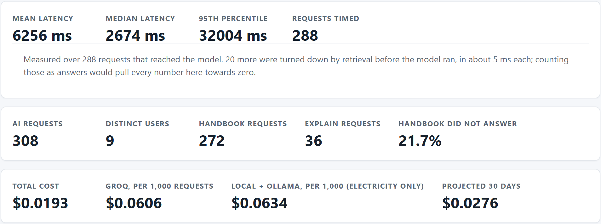
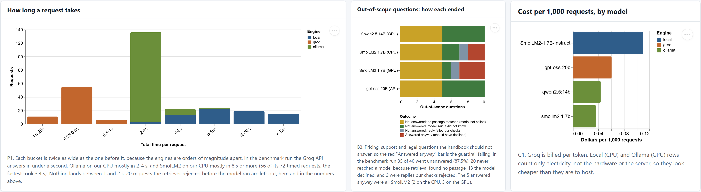

/analytics/ on the deployed site (sign-in required; link and test login are in the submission comment)DataPact has two AI features: Explain a violation (the Groq gpt-oss-20b API in production, or SmolLM2-1.7B locally, decides whether a failed check is a data issue or an out-of-date contract) and Handbook Q&A (RAG, local only: MiniLM embeddings retrieve 3 handbook passages, then SmolLM2 answers from them; switched off on PythonAnywhere, whose disk cannot hold the models). Every request writes one AIRequestLog row: time, feature, engine, model, user (as user-<id>), request type, input size, prompt and completion tokens, retrieval time, total latency, outcome and cost. The user's text is never stored.
| Area | ID | Question | Widget on the dashboard | Fields used |
|---|---|---|---|---|
| Performance | P1 | How does latency vary: mean, median, 95th percentile? | KPI cards + latency histogram | latency_ms |
| P2 | Which engine is faster, local SmolLM2 or Groq, for each feature? | Bar: median latency by engine and feature | engine, feature | |
| P3 | Where does handbook time go (retrieval vs generation)? Do longer inputs answer slower? | Stacked bar + scatter (handbook question length vs latency) | retrieval_ms, input_chars | |
| Behavior | B1 | How often are the AI features used per day, and is use growing? | KPI cards + line: requests per day | created_at, user_label |
| B2 | Which feature and topics do users ask about most? | Bar: requests by feature and topic | feature, query_type | |
| B3 | How often does the handbook fail to answer, and why? | Stacked bars: outcome shares by setup + out-of-scope outcomes | status | |
| Cost | C1 | What does one request cost on each engine and model? | KPI cards + bar: cost per 1,000 by model | engine, cost_usd |
| C2 | Which request types use the most tokens and drive cost? | Stacked bar: prompt vs completion tokens + top-cost table | prompt_tokens, completion_tokens | |
| C3 | How does daily cost change, and what would a month cost? | Line: cost per day by engine + projected 30-day card | created_at, cost_usd |
Filters: time range (7 / 30 / 90 days / all), engine, and data source (live use vs benchmark run). Cost: Groq = tokens × Groq's price ($0.075 per 1M input, $0.30 per 1M output tokens); local and Ollama = electricity only (watts × time × $0.15/kWh), which leaves out hardware and hosting.
benchmark.| Setup | Handbook median | Explain median | Handbook answered | Invalid | $ / 1,000 |
|---|---|---|---|---|---|
Groq gpt-oss-20b (API) | 0.36 s | 0.36 s | 52 / 68 | 0 | $0.061 |
| SmolLM2-1.7B, CPU (transformers) | 22.6 s* | 14.2 s | 53 / 68 | 6 | $0.110 |
| SmolLM2-1.7B, GPU (Ollama) | 2.55 s | 2.66 s | 54 / 68 | 7 | $0.037 |
| Qwen2.5 14B, GPU (Ollama) | 2.77 s | 4.11 s | 54 / 68 | 0 | $0.043 |
Medians: the 288 requests that reached a model (63 handbook, 9 explain per setup); answered, invalid and cost: all 308. *Bimodal by reply length: short replies (~25 tokens) under 13 s, full answers (~130 tokens) over 22 s.


Dashboard on "Benchmark run" data (local render; production screenshots attached): summary cards; P1 histogram, B3 out-of-scope, C1 cost.